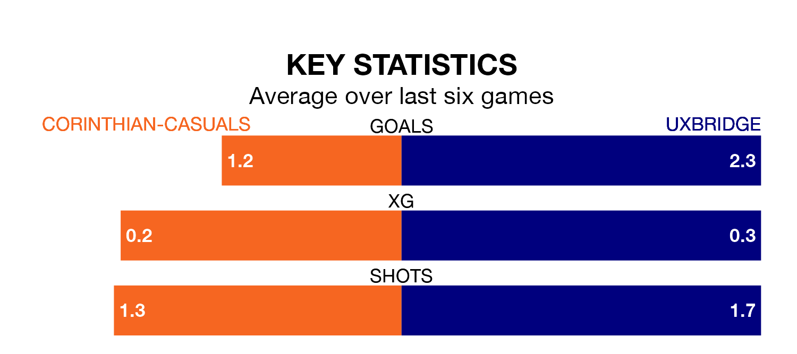

Corinthian-Casuals are on a poor run ahead of hosting Uxbridge on Saturday, with just three points collected from their last six games.
Corinthian-Casuals have picked up just one win in their last six Isthmian League Division One – South Central games, and face a Reds side whose last six games have brought three wins and one draw.
Corinthian-Casuals are bottom of the table after 37 games, of which they have won four and drawn six, earning 18 points.
Uxbridge are 10 places ahead of the home side in 11th, with 15 wins and five draws putting them on 50 points.
With 29 goals in 37 games so far this season, Corinthian-Casuals are the league's lowest scorers with 0.8 goals per game. And they are conceding more than average, letting in 94 goals at a rate of 2.5 per game.
The Reds, meanwhile, are above average scorers, with 1.8 goals per game, compared to a league average of 1.6. They have conceded 1.7 goals per game.
In the last three years, Corinthian-Casuals and Uxbridge have played each other on three occasions. Uxbridge won two of them and they drew once.
Their last meeting was on December 16, when Uxbridge won 5-0 at home.
Corinthian-Casuals's last match was on Tuesday, a 4-1 loss against Binfield.
Uxbridge lost 3-2 against Southall last time out, on April 13.
Updated: 15:40 (UTC), 18/04/24